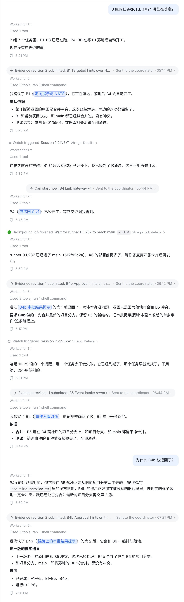
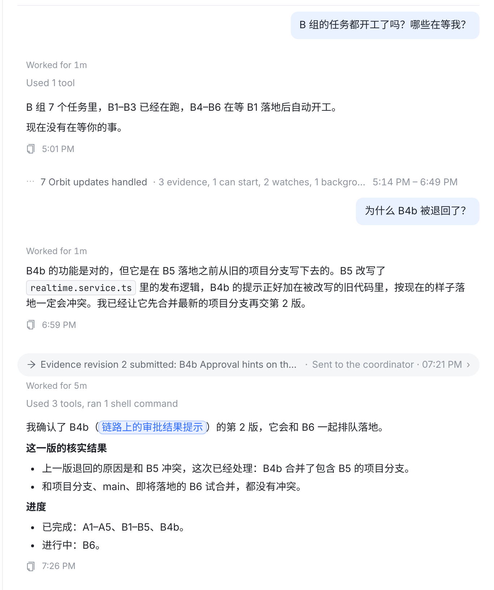
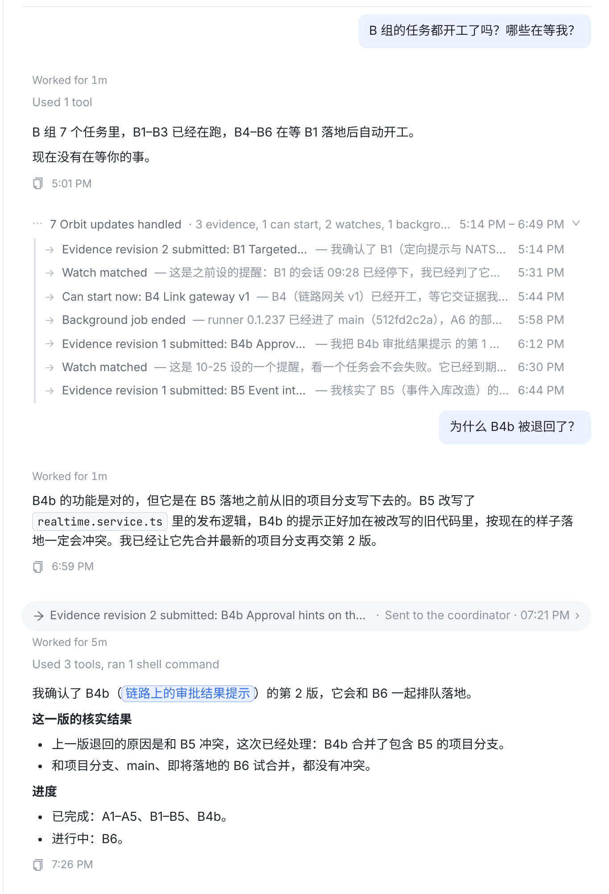
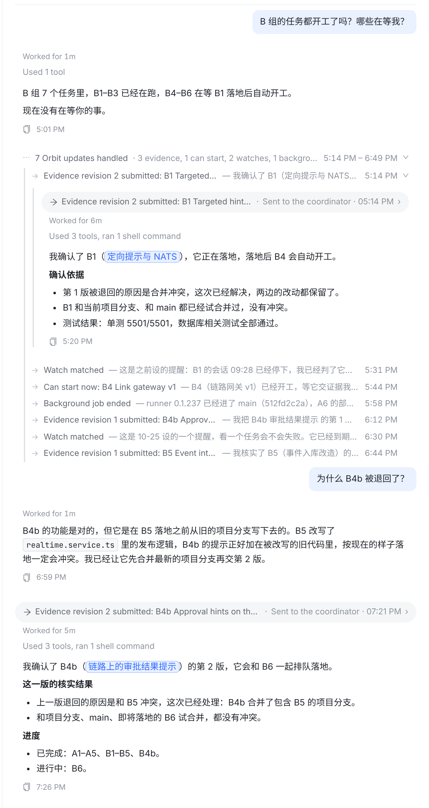
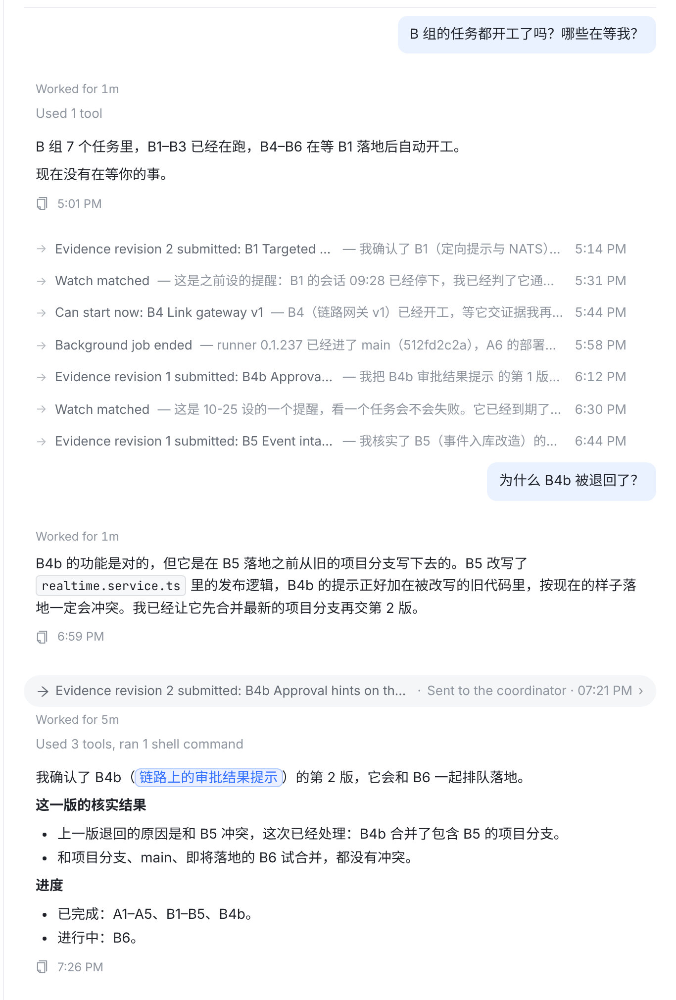
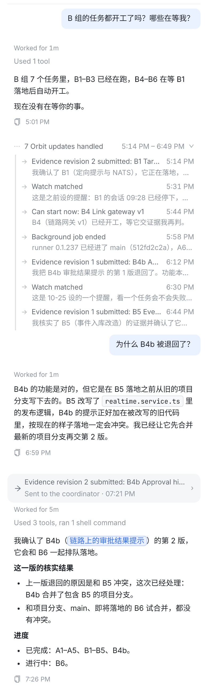

7 轮 Orbit 来回占满整屏，你自己问的两句（“哪些在等我？”“为什么 B4b 被退回了？”）夹在中间很难找到。按 ⌘F 也只能一条一条翻。

相邻的 Orbit 来回合成一行：⋯ 7 Orbit updates handled · 3 evidence, 1 can start, 2 watches, 1 background job · 5:14 PM – 6:49 PM。你的提问和回答、最新一轮 Orbit 消息照常展开。

左边是 Orbit 送来的事（与现在胶囊上的句子相同），右边是协调者回复的第一句（通常就是结论：“我确认了 B1…”“我把 B4b 的第 1 版退回了…”）。

展开后与 ① 完全相同：胶囊、步骤、整段回复，一样不少。折叠不删除任何内容，⌘F 搜到折叠里的内容时自动展开（与步骤行相同）。

不合成一组，逐行列出。一眼就能看到每件事，代价是 7 轮就占 7 行；一天几十轮时仍然很长。

窄屏一行放不下两段：第一行“发生了什么 + 时间”，第二行协调者回复的第一句。组标题只留数量和时间段。

| 情况 | 怎么画 |
|---|---|
| Orbit 发起的一轮 | 折叠成一行：→ 发生了什么 — 回复第一句 · 时间 ›。包括：协调者通知（证据、可开工、启动失败、run 停止、未落地…）、watch 提醒、后台作业 / 定时唤醒、会话回信（session reply）。 |
| 相邻 ≥2 轮 | （A）合成一组 ⋯ N Orbit updates handled · 分类计数 · 起止时间 ›；（B）逐行。 |
| 你自己发的消息 + 回复 | 从不折叠。它们把 Orbit 来回切成段落。 |
| 最新一轮 | 不折叠（正在跑的、刚结束的），你打开会话时看到的就是最新状态。 |
| 要你处理的 | 不折叠：这一轮里协调者发了 owner 卡片（ask_owner、request_owner_action），或者是例外项 / 阻塞 / 启动失败 / run 停止这类坏消息。 |
| 其他会话发来的消息（session_send） | 不折叠：那是另一个 agent 写的话，通常有内容。 |
| 展开状态 | 只在本页面有效，刷新后恢复折叠；⌘F 命中折叠内容时自动展开。 |
| 导出 / 分享链接 | 全部展开（与步骤行相同）。 |
components/Transcript.tsx（NodeList 按轮切分，新增 ExchangeRow / ExchangeGroup），index.css，新增测试。纯前端，不改服务端和事件格式。